Hỏi bài các mônAsk about any subject
Every subject, in two languages
A study chat for every subject of the grade, with the key English terms to save. Homework photos are checked step by step.
Answers inTiếng ViệtEnglishSong ngữ (both)
Live
One study platform for Vietnamese schools, grades 6 to 12. Every subject in Vietnamese and English, a full English course in three levels, teacher tools in the official formats and a safe corner to talk.
For school leaders, teachers and partners. In testing with adult testers; no results claimed yet.
Real screens. Student screens come from the simpler student app Built
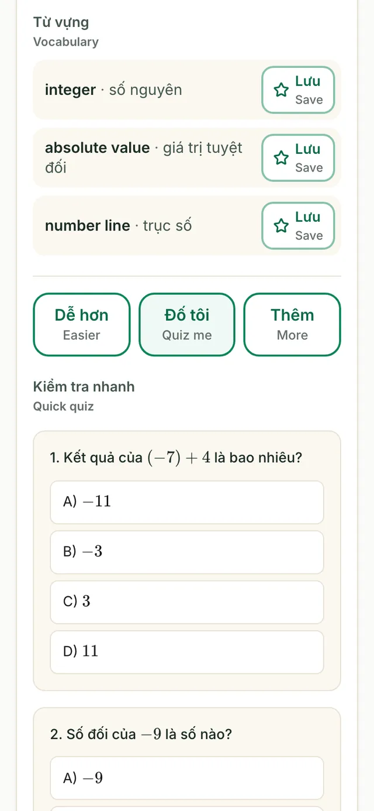
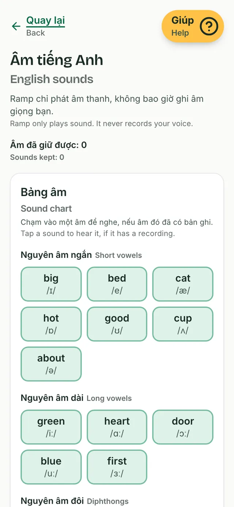
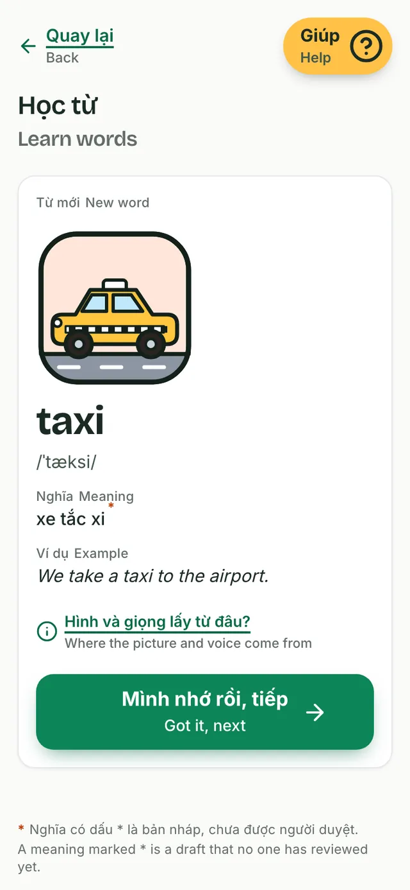
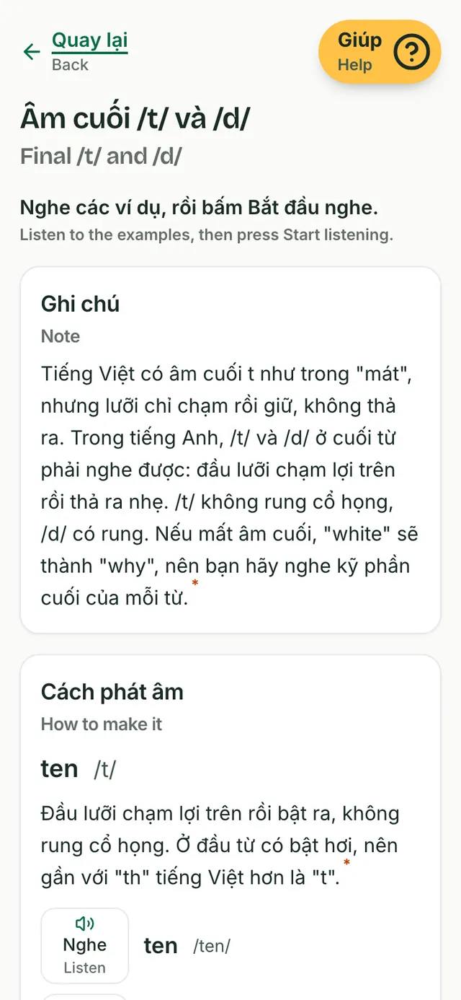

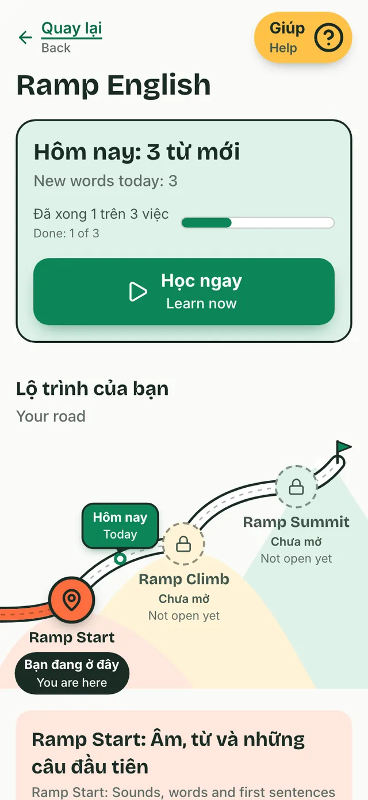
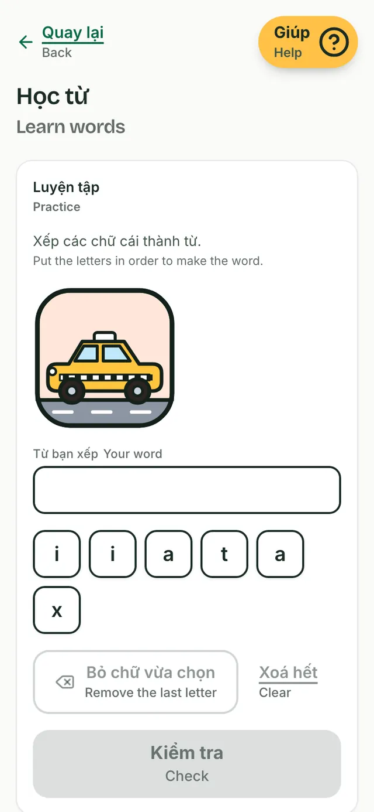
Practised, not kept yet. Building taxi is practice. Ramp counts it as kept only after a recall a day later and another about a week later.
See how a word is keptTry it: tap the glowing button on the phone.
One platform, four people served at once, on Chương trình GDPT 2018 for grades 6 to 12. The student gets help in every subject and a full English course. The teacher gets plans and tests from where the class got stuck. The parent gets plain numbers. The school gets a safe corner that reaches the right adult.
A study chat for every subject of the grade, with the key English terms to save. Homework photos are checked step by step.
Answers inTiếng ViệtEnglishSong ngữ (both)
Live
Draft a plan or a test from where the class is stuck, edit it and download it for Word.
Live
Every message is checked, and the right adult at school is alerted if one suggests danger.
Exam, fee and deadline answers come only from reviewed facts or official sites, with the source, the link and the date.
Live
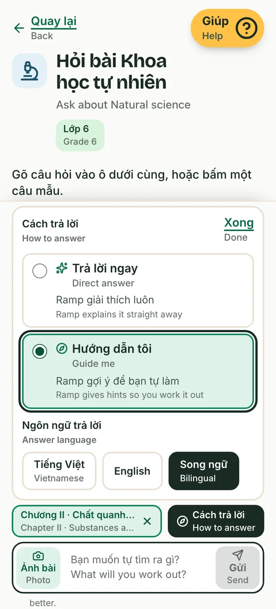
Live
Real screen from the simpler student app, with Giúp in the top row Built
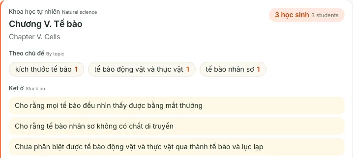

Live

Live
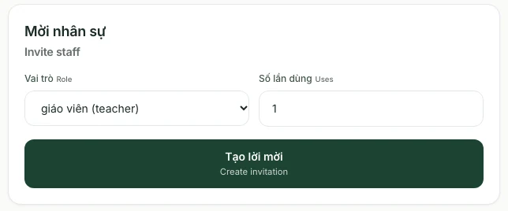

Two parts of the school admin page.
Live
Real screens. Numbers in them are test data, not results.
Schools already know these four kinds of tools. Flip each card to see what Ramp does instead, by design. Live unless marked. Live
One chat for every age, every subject and every country.
The book's pages, on a screen.
Words and games, apart from the school day.
Help after school, away from the class teacher.
In Ramp English
No streaks.
No points.
No leaderboards.
On purpose. Ramp English games show a student only their own last and best score, nothing compares one child with another, and the plan runs every day with no streak to lose.
Hôm nay của bạnYour day
20 phút
6 từ
20 minutes, 6 words
14 phút
4 từ
14 working minutes, 4 checked words
What the student reports, beside what Ramp recorded. Kindly.
Illustration with sample numbers, not a real report.
At Start, the test slips in made-up words, so a student who taps "I know it" for a word that does not exist is noticed.
Every subject in Tiếng Việt, English or Song ngữ (both), with the key English terms of the subject to save.
Only adult testers sign in today, and student data is stored in Singapore.
A full English course, not a word app. Three levels, each with courses for sounds, words, grammar, reading and writing, and a test at the end Built, with Start's grammar units still to come Coming. The whole road shows on the student's home from day one Live.
14
courses across the three levels Built
106
lessons in Ramp Climb and Ramp Summit Built
44
sounds of British English Live
30
listening lessons on those sounds Live
What is in the product, counted. Not results.
Âm, từ và những câu đầu tiênSounds, words and first sentences
About A0 to A1 · 4 courses · 12 lessons live today, 62 more planned
Live 12 lessons today: letters, spelling aloud, phonetic symbols, syllables and the stress mark, then capital letters and common versus proper nouns.
Level-end test: reading, listening and writing Built
Ngữ pháp, âm và đoạn văn ngắnGrammar, sounds and short texts
About A1 to A2 · 5 courses · 14 units · 56 lessons · 126 words
Level-end test: reading, listening and writing
Đọc hiểu và viết bàiRead, understand and write
About A2 to B1 · 5 courses · 10 units · 50 lessons · 120 words
Level-end test: reading, listening and writing
A final check of the student's Ramp level, then readiness estimates and next courses
For reading, listening and writing. Speaking is not covered. IELTS is shown only as a range, never a single band, and a practice exam shows no pass line.
5 for exams, 6 for school subjects in English and 2 for everyday English, shown locked on the road today.
Levels and readiness are Ramp's own estimates, not official certificates or exam results.
Words only become sentences with grammar, so Ramp English teaches it on purpose: one idea per lesson, practised by producing it, then checked.
Fix the city's name: tap the a, then the l.
A name takes a capital and no "a": London, Monday, July.
Yesterday I ___ home. Pick the ending.
Talk about the past with -ed, was and were.
A ___ friend. Pick the ending.
Make new words with -er, -ist, -ful and -ness.
Illustration Three small tasks written for this page, one idea from each level. In Ramp English, practice means producing the answer.
Every Ramp Start lesson, in four steps Live
Live in the lessons today
Coming 9 more units; the full map is 11 units, 74 lessons
14 units, 56 lessons, 126 words
10 units, 50 lessons, 120 words

Stuck on a grammar point today? Giải thích (Explain) takes one grammar or word idea at the student's level, with examples, then checks they understood. Live
Grammar from the first test. The starting test has grammar items at Climb and Summit, so grammar counts toward where a student starts. Live
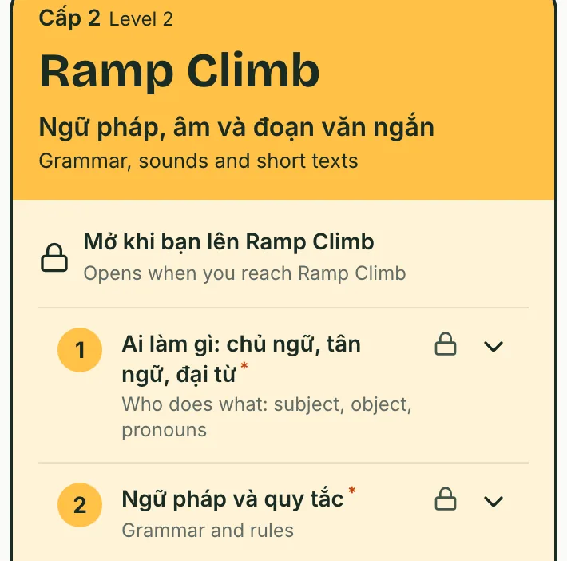
In the symbols Vietnamese textbooks print: 12 single vowels, 8 diphthongs and 24 consonants. Every word in Ramp English carries its British IPA. Live
Tap a sound to see its example word. The nine vowels with a speaker play an open reference sample.
Single vowels
Diphthongs
Consonants
Listen only. Ramp never records the student's voice.
A student sees the lessons up to their own level.
whitenotwhy
Lesson one starts where Vietnamese speakers most often lose English: the sound at the end of a word. Drop the final t, and white becomes why.

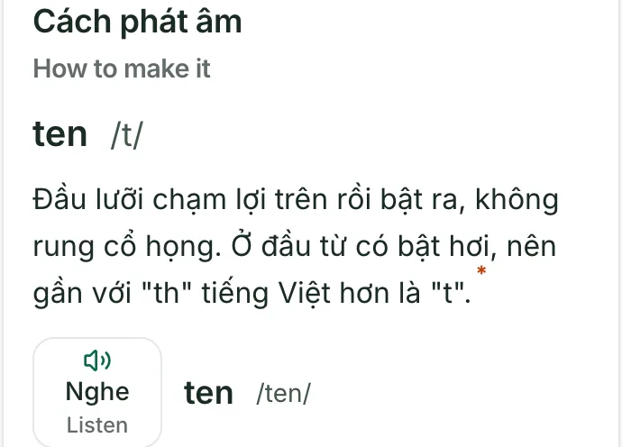
Seeing a word is not knowing it. Ramp counts a word as kept only when the student brings it back from memory a day later, and again about a week later. Ramp's server decides every mark and every wait, not the phone. Live
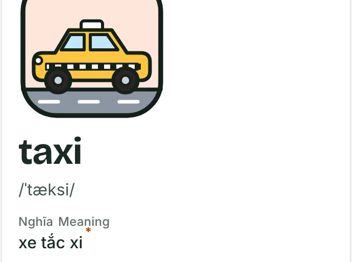
A word card with a British voice, the IPA, an example sentence, a draft Vietnamese meaning and, for most words, a picture.
At least 20 hours on, recall it from its picture or meaning.
Recall it again, with no peek in between and no first-letter help.
The app says "kept for a week", never "learned".
Try it: walk the word taxi to kept.
Illustration of the rules. In the app the waits are real: at least 20 hours, then about a week.
Two recalls make a word kept; after that it keeps being checked.
Look again and the wait starts over.
Miss a recall and the word goes back to learning.
Say "I know it" and write the word next time.
Answer too fast and it does not count.
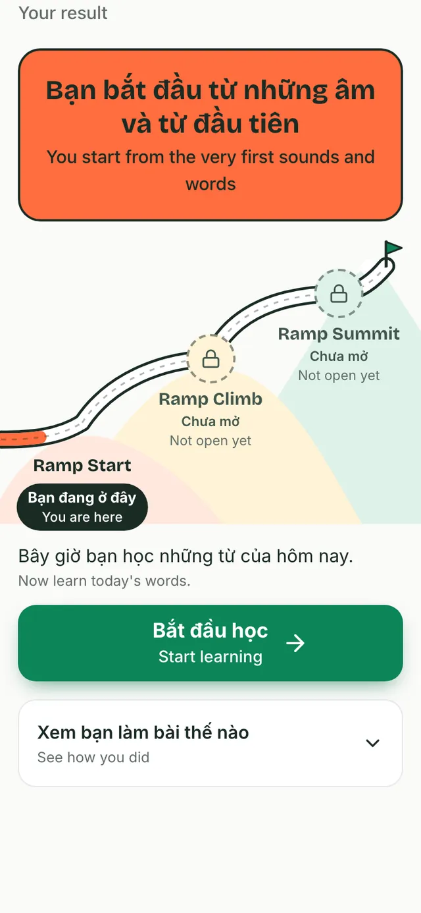
Real screen: a starting test result, in the simpler student app Built
Two questions, then a short test of at most 8 questions places the student at Start, Climb or Summit. At Start, made-up words catch a guess, and a retake can only move a student up.
3 new words a day; each time they pass their check, 3 more open, up to 15. Practice means producing the word, such as building it from letter tiles. Daily words run for Ramp Start today.
Spell it, Hear and write, Fill the gap and Mini crossword. Games never count toward kept and show only the student's own last and best score.
Two modes, Hướng dẫn tôi (Guide me) and Giải thích (Explain). It stays on English and never says a word the student is tested on today. In Guide me, the answer appears only after three real tries.
A study chat for every subject of the student's grade, built on Chương trình GDPT 2018 and the Kết nối tri thức với cuộc sống books. The subject and its English words arrive together. Live

Every subject of the grade opens a study chat.
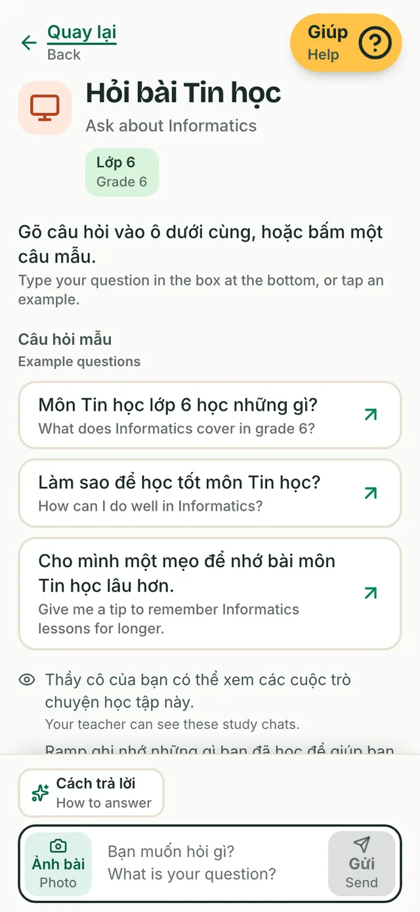
From a photo, Ramp checks each step of the student's own working, and never stores the photo.

In Hướng dẫn tôi (Guide me), one short question at a time.
The rule, numbered steps, an example and the key English terms.
Illustration in English, written for this page. In the app the chat runs in Tiếng Việt, English or Song ngữ, and button labels are the app's.
Tạo hoạt hình (Animate this) in maths, the sciences and Tin học, plus diagrams in maths and the sciences.
Đố tôi (Quiz me) turns a topic into practice questions.
Chapter titles only. Six books have full chapter lists, from Toán 6 to Sinh học 10. Ramp stores the titles, never textbook text.
Two weeks of real questions become one picture of where the class is stuck, and one press drafts the next lesson or a test from it. The AI drafts. The teacher decides. Live
In Hướng dẫn tôi (Guide me), on a chapter or on an idea.
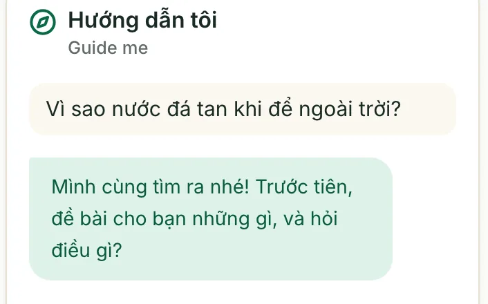
Chỗ lớp đang kẹt (Where the class is stuck) groups 14 days by chapter, with wrong ideas 3 or more students share.
A KHBD plan (Phụ lục IV of Công văn 5512) or a Công văn 7991 test out of 10, with no student names. The teacher edits every part, and every draft is labelled Bản nháp AI (AI draft).
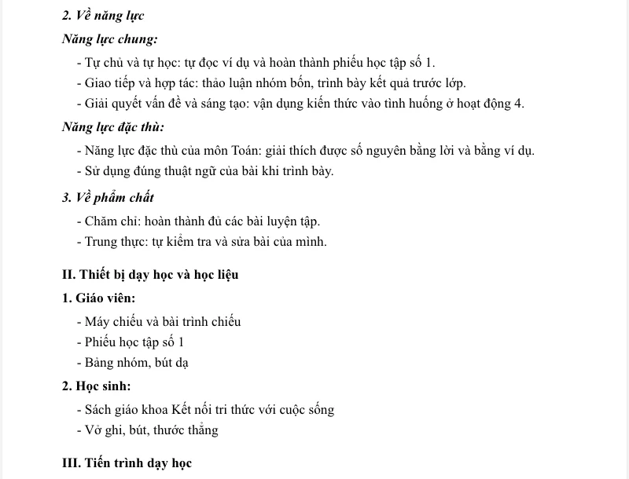
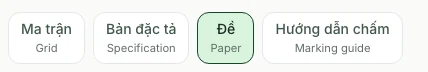
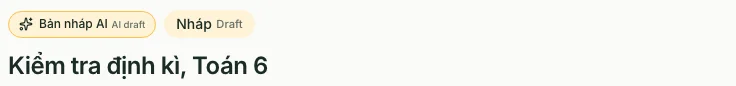
Students take the test in the app against a timer. Ramp's server marks multiple choice, true or false and short answers; the essay waits for the teacher.
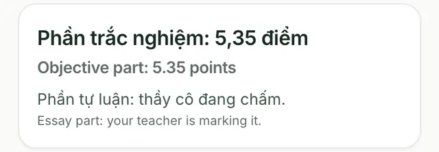
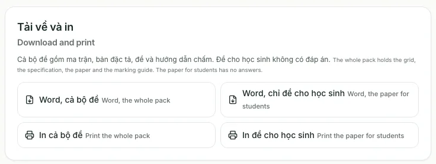
The AI only suggests essay marks and quotes the student's own words. No total exists until the teacher confirms each one, and each draft is logged in the teacher's own AI log.
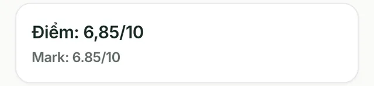
Every draft is labelled Bản nháp AI (AI draft); plans and tests download as a Word file or print to PDF.
Strengths, weak topics, saved terms, tests, and subject chats the teacher can read but not change.
A marks file for either system, still to be checked against a school's template.
Drafts the teacher sends, and an assistant that reads class figures without students' names. The conversation is not saved, and only the teacher can see their AI log.
At most three students who need help, or "The class is fine today; nothing to do."
Confirm writing marks, see milestone counts and how ready the class is for each exam. Built
Made for a class 6 child. The simpler student app puts one clear next step on every screen, and a Giúp (Help) button in the top row that explains the screen, points at the button to press and gives a first-day tour. Built
How Giúp points, shown on this page. Press it to see Chỉ cho mình (Show me) ring a real button here.
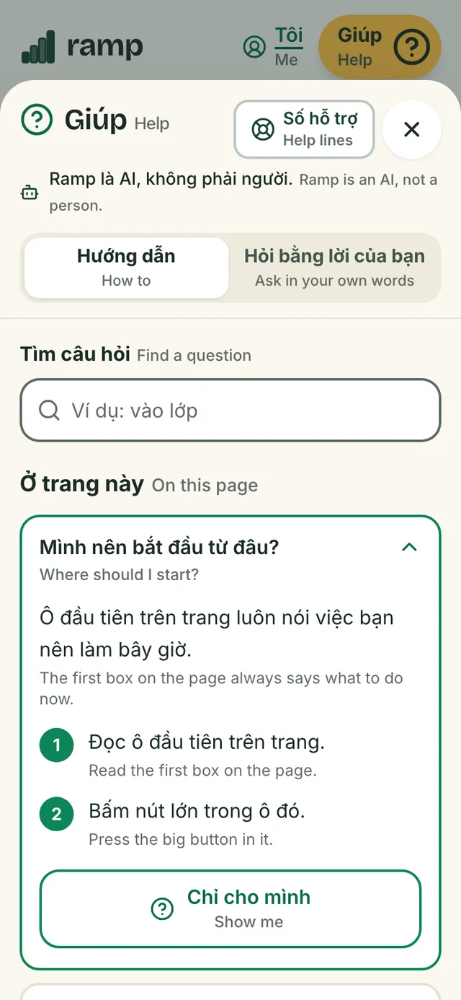
What this page is for, in numbered steps, and plainly that Ramp is an AI, not a person.
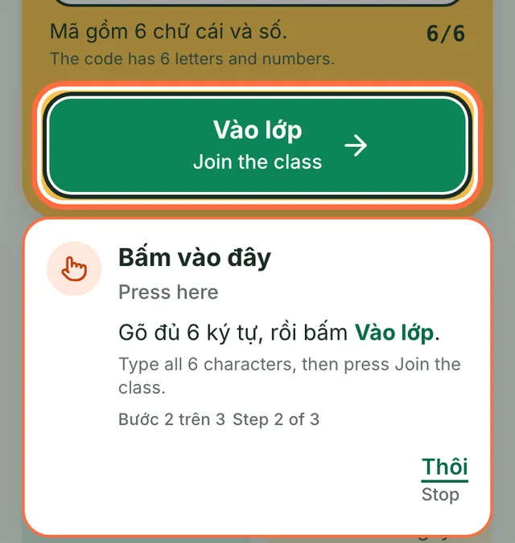
Show me rings the real button on the page.
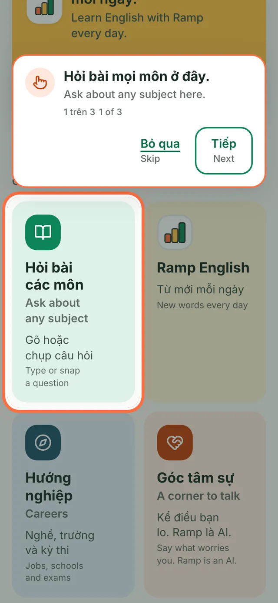
Three short stops on day one, such as Hỏi bài mọi môn ở đây (Ask about any subject here).
Việc của bạn bây giờ (Your next step): one action and one button at the top of the home page.
Hôm nay (Today): today's words, a progress line and one Học ngay (Learn now) button, above the drawn road.
Giúp answers questions about the app, points at buttons and gives the tour.
In today's app, Hỏi Ramp (Ask Ramp) has 14 ready answers about the app that use no AI. Live
In Góc tâm sự (a corner to talk) a student can write about a worry. Every message is checked before Ramp replies. If one suggests danger, Ramp alerts the student's homeroom teacher and the school's counsellors in the app, at once for high risk. Live
The student sees
A warm reply that asks if they are safe and urges them to talk to an adult today, with help lines 111, 115 and 113, the Ngày Mai hotline and the school's team.
Who is told
The homeroom teacher and counsellors, at once, in the app.
By email too, holding only the class, the level and a link. Built
The student sees
Ramp keeps listening and gently moves toward talking to a trusted adult.
Who is told
The same people, in the app.
The student sees
A normal reply.
Who is told
No one.
The notice comes first. Ramp is an AI, not a person, and does not promise to keep secrets. The chat never says a teacher was told; the notice says it once, plainly.
No chat text in alerts. To read a flagged chat, staff press Open, and Ramp records who and when.
Counts only for the admin. The school admin sees how many alerts, never a name or a word.
Gone in 30 days. A chat with no alert is deleted 30 days after its last message.
Set up first. The school admin names each class's homeroom teacher and invites counsellors, and the admin page warns while an alert would reach no one.
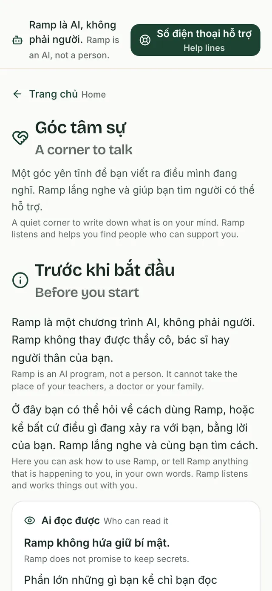
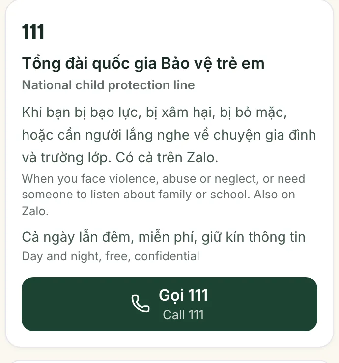
Hướng nghiệpCareers
Exams, fees, scholarships and deadlines are answered only from reviewed facts or official sites, always with the source, the link and the date.
Real screen: a general careers question. Exam, fee and deadline answers carry their source, link and date.
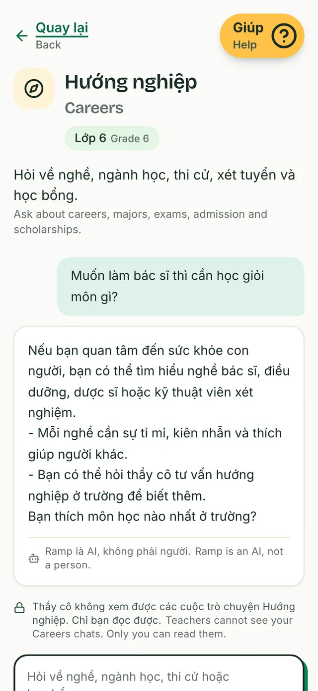
A parent who links to their child gets a short daily English report: plain numbers and one thing to do tonight. It starts only after the parent agrees, one tap stops it at once, and the child is told what the parent sees. Live
Real screen of a test account. The numbers are test data.
Linked by the school or the child. A school invite, or a family code the child opens on their own account.
An evening email that holds only a link: no name and no numbers. Built
Finished courses, certificates and the exam estimate, for parents. Built
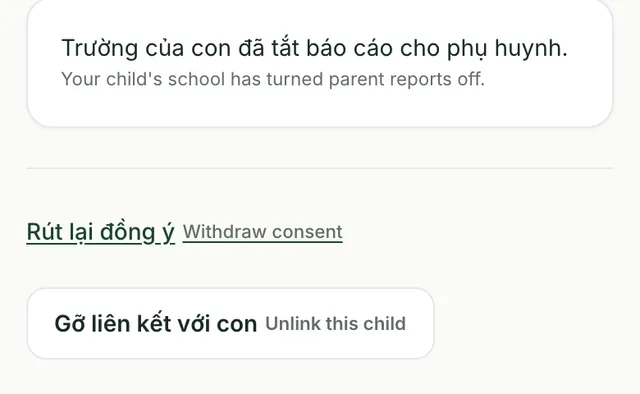
Three steps from an empty school to a class at work.
Teachers, counsellors and parents each get an invite, and each invite lasts 14 days.
The class sets each student's grade. Students join by QR code, link or a 6-character code.
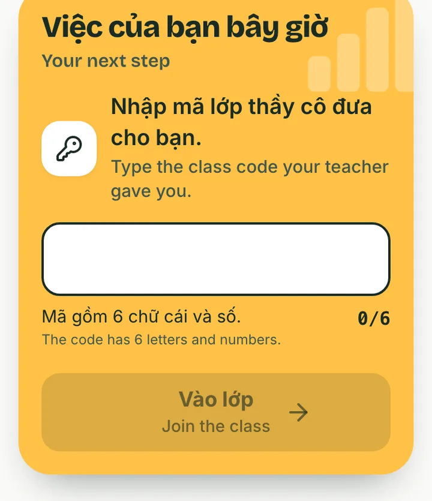
By a school invite, or a family code the child opens on their own account. The daily report starts only after the parent agrees.
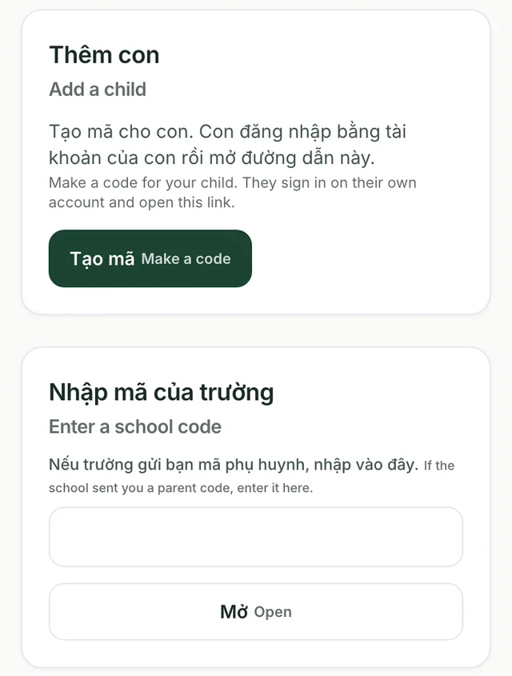
Ramp Schools for grades 6 to 12: every subject in Vietnamese and English, Ramp English from the first sound to the first essay, teacher tools in the official formats, and a safe corner to talk.
See it on a phone. Ask the Ramp team for a live walk-through.
Email pr3n3v@gmail.com Download the PDF 3.6 MB